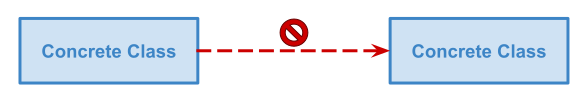
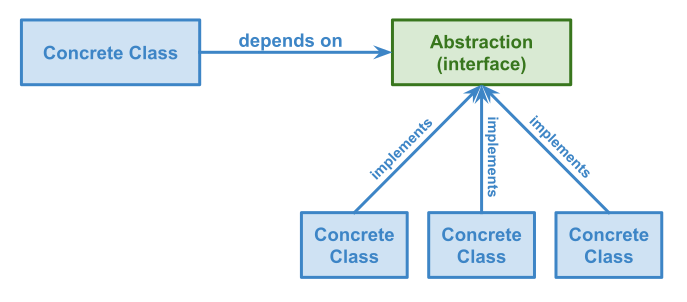
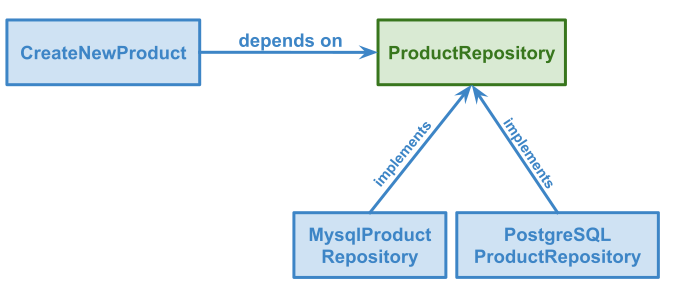
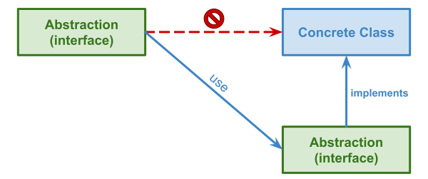

The dependency inversion principle (DIP) is one of the SOLID principles. It is a crucial concept in object-oriented programming (OOP) because it highlights the importance of decoupling high-level modules from low-level modules. It helps to make code more modular, flexible, and maintainable by ensuring that high-level modules depend on abstractions rather than concrete implementations. Let’s have a look at the wikipedia definition and understand its meaning:
High-level modules should not import anything from low-level modules. Both should depend on abstractions (e.g., interfaces). Abstractions should not depend on details. Details (concrete implementations) should depend on abstractions.
What does it mean exactly? To be compliant with this principle,your code needs to follow three main rules, which we will detail in the next three sections.
Rules 1: A class should not depend on another
The first one is that a class should not depend on another one to avoid coupling them together. If a class is coupled with another one, it means you won’t be able to use the first one without the second one.

Let’s take an example. The most common example of coupling is when we use the singleton pattern. This pattern allows you to create a unique instance of a class and make it global. It is useful to create a database connection, we don’t need to create it each time we need to query the database.
class DatabaseConnection {
private static connection: DatabaseConnection | null = null;
public static getInstance(): DatabaseConnection {
if (DatabaseConnection.connection === null) {
DatabaseConnection.connection = new DatabaseConnection(/** config */);
}
return DatabaseConnection.connection;
}
}
Then we can access it from anywhere in the application when we need to query the database, using the static method called getInstance.
class CreateNewProduct {
create(product: Product) {
const connection = DatabaseConnection.getInstance()
// ...
}
}
I remember using it a lot when I was a junior developer. It seemed powerful because we didn’t need to inject anything. However, the problem with this piece of code is that it couples CreateNewProduct to DatabaseConnection. Here, we need a working database to test or run this piece of code. That’s a shame because it avoids quickly checking if the product creation logic works or not.
Do you speak French ? Tired of the same old CRUD applications, struggling with your framework, or feeling the pressure of production releases? It's time to take your career to the next level.
Discover the power of Hexagonal Architecture and DDD to build robust and sustainable Symfony applications. Join me and kickstart your journey toward mastering advanced development techniques.
Rule 2: A class should only depend on abstractions
The second rule is that a class should only depend on abstractions (e.g., interfaces). In OOP, an interface is like a contract. It describes a set of methods that an object needs to implement. This is great because it can be implemented in several ways. It makes your code more modular as you can use a specific implementation depending on the context.

Let’s see how an interface can prevent coupling issues between the CreateNewProduct and the DatabaseConnection class. First, we will introduce a new interface called ProductRepository to define how to save a product in the application.
interface ProductRepository {
save(product: Product)
}
Then we will create an implementation called MysqlProductRepository that will be responsible for saving products in a MySQL database.
class MysqlProductRepository implements ProductRepository {
save(product: Product) {
const connection = DatabaseConnection.getInstance()
connection.executeQuery('INSERT INTO products ...')
}
}
Finally, we need to refactor the CreateNewProduct to remove its dependency on the DatabaseConnection. We will inject an instance ProductRepository into the CreateNewProduct class to prevent it from being coupled to another class.
Note: I still use the DatabaseConnection.getInstance() method to get the database connection to keep the example simple but another way would be to inject the database connection through the MysqlProductRepository constructor.
class CreateNewProduct {
constructor(productRepository: ProductRepository) {}
create(product: Product) {
this.productRepository.save(product)
}
}
By introducing the ProductRepository interface and using dependency injection, the CreateNewProduct class becomes more flexible as it works with any implementation of ProductRepository. If we need to switch from MySQL to PostgreSQL for any reason, we only need to create a new ProductRepository implementation for PostgreSQL and inject it into CreateNewProduct. This approach decouples the ``CreateNewProduct` class from a specific database implementation, making it easier to maintain and update the code in the future.

Testing chunks of code that interacts with Input/Output (IO) can be challenging, especially when we only want to test the business logic . Now, it is easy to test the product creation because we can replace the mysql repository but a fake one. I’ve written a blog post to explain how the dependency inversion principle can ease testing:

Rule 3: An interface should not depend on concrete implementations
The last rule is an interface should not depend on concrete implementations to avoid coupling them to another class.
